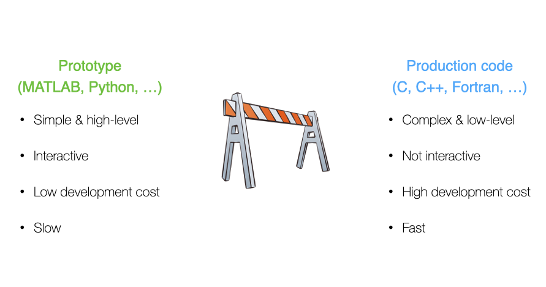
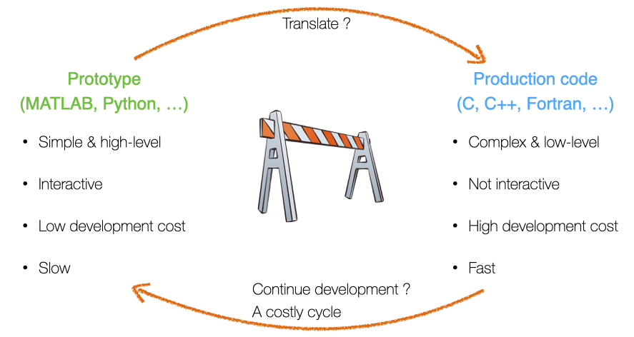

Agenda
📚 The "two-language problem",ParallelStencil.jlxPU implementation
💻 Reference testing, GitHub CI and workflows
🚧 Exercises - (Project 1):
xPU codes for 2D thermal porous convection
2D and 3D xPU implementation
CI workflows
Address the two-language problem
Backend portable xPU implementation
Towards 3D porous convection
Reference testing, GitHub CI and workflows
Combining CPU and GPU implementation within a single code.
You may certainly be familiar with this situation in scientific computing:

Which may turn out into a costly cycle:

This situation is referred to as the two-language problem.
Multi-language/software environment leads to:
Translation errors
Large development time (overhead)
Non-portable solutions
Good news! Julia is a perfect candidate to solve the two-language problem as Julia code is:
simple, high-level, interactive (low development costs)
fast, compiled just ahead of time (before one uses it for the first time)

Julia provides a portable solution in many aspects (beyond performance portability).
As you may have started to experience, GPUs deliver great performance but may not be present in every laptop or workstation. Also, powerful GPUs require to be hosted in servers, especially when multiple GPUs are needed to perform high-resolution calculations.
Wouldn't it be great to have single code that both executes on CPU and GPU?
Using the CPU "backend" for prototyping and debugging, and switching to the GPU "backend" for production purpose.
Wouldn't it be great? ... YES, and there is a Julia solution!
Let's get started with ParallelStencil.jl
ParallelStencil enables to:
Write architecture-agnostic high-level code
Parallel high-performance stencil computations on GPUs and CPUs
ParallelStencil relies on the native kernel programming capabilities of:
CUDA.jl for high-performance computations on Nvidia GPUs
Base.Threads for high-performance computations on CPUs
And to be released soon AMDGPU.jl for high-performance computations on AMD GPUs
READMEBefore we start our exercises, let's have a rapid tour of ParallelStencil's repo and README.
So, how does it work?
As first hands-on for this lecture, let's merge the 2D fluid pressure diffusion solvers diffusion_2D_perf_loop_fun.jl and the diffusion_2D_perf_gpu.jl into a single xPU code using ParallelStencil.
Let's get started with using the ParallelStencil.jl module and the ParallelStencil.FiniteDifferences2D submodule to enable math-close notation.
💻 We'll start from the Pf_diffusion_2D_perf_gpu.jl (available later in the scripts/ folder in case you don't have it from lecture 6) to create the Pf_diffusion_2D_xpu.jl script.
The first step is to handle the packages:
const USE_GPU = false
using ParallelStencil
using ParallelStencil.FiniteDifferences2D
@static if USE_GPU
@init_parallel_stencil(CUDA, Float64, 2)
else
@init_parallel_stencil(Threads, Float64, 2)
end
using Plots,Plots.Measures,PrintfThen, we need to update the two compute functions , compute_flux! and update_Pf!.
Let's start with compute_flux!.
ParallelStencil's FiniteDifferences2D submodule provides macros we need: @inn_x(), @inn_y(), @d_xa(), @d_ya().
The macros used in this example are described in the Module documentation callable from the Julia REPL / IJulia:
julia> using ParallelStencil.FiniteDifferences2D
julia>?
help?> @inn_x
@inn_x(A): Select the inner elements of A in dimension x. Corresponds to A[2:end-1,:].This would, e.g., give you more infos about the @inn_x macro.
So, back to our compute function (kernel). The compute_flux! function gets the @parallel macro in its definition and returns nothing.
Inside, we define the flux definition as following:
@parallel function compute_flux!(qDx,qDy,Pf,k_ηf_dx,k_ηf_dy,_1_θ_dτ)
@inn_x(qDx) = @inn_x(qDx) - (@inn_x(qDx) + k_ηf_dx*@d_xa(Pf))*_1_θ_dτ
@inn_y(qDy) = @inn_y(qDy) - (@inn_y(qDy) + k_ηf_dy*@d_ya(Pf))*_1_θ_dτ
return nothing
endNote that currently the shorthand -= notation is not supported and we need to explicitly write out the equality. Now that we're done with compute_flux!, your turn!
By analogy, update update_Pf!.
@parallel function update_Pf!(Pf,qDx,qDy,_dx,_dy,_β_dτ)
Pf = ...
return nothing
endSo far so good. We are done with the kernels. Let's see what changes are needed in the main part of the script.
In the # numerics section, threads and blocks are no longer needed; the kernel launch parameters being now automatically adapted:
function Pf_diffusion_2D(;do_check=false)
# physics
# [...]
# numerics
nx, ny = 16*32, 16*32 # number of grid points
maxiter = 500
# [...]
return
endIn the # array initialisation section, we need to wrap the Gaussian by Data.Array (instead of CuArray) and use the @zeros to initialise the other arrays:
# [...]
# array initialisation
Pf = Data.Array( @. exp(-(xc-lx/2)^2 -(yc'-ly/2)^2) )
qDx = @zeros(nx+1,ny )
qDy = @zeros(nx ,ny+1)
r_Pf = @zeros(nx ,ny )
# [...]In the # iteration loop, only the kernel call needs to be worked out. We can here re-use the single @parallel macro which now serves to launch the computations on the chosen backend:
# [...]
# iteration loop
iter = 1; err_Pf = 2ϵtol
t_tic = 0.0; niter = 0
while err_Pf >= ϵtol && iter <= maxiter
if (iter==11) t_tic = Base.time(); niter = 0 end
@parallel compute_flux!(qDx,qDy,Pf,k_ηf_dx,k_ηf_dy,_1_θ_dτ)
@parallel update_Pf!(Pf,qDx,qDy,_dx,_dy,_β_dτ)
if do_check && (iter%ncheck == 0)
# [...]
end
iter += 1; niter += 1
end
# [...]The performance evaluation section remaining unchanged, we are all set!
Wrap-up tasks
Let's execute the code having the USE_GPU = false flag set. We are running on multi-threading CPU backend with multi-threading enabled.
Changing the USE_GPU flag to true (having first relaunched a Julia session) will make the application running on a GPU. On the GPU, you can reduce ttot and increase nx, ny in order achieve higher .
ParallelStencil also allows for more explicit kernel programming, enabled by @parallel_indices kernel definitions. In style, the codes are closer to the initial plain GPU version we started from, diffusion_2D_perf_gpu.jl.
As the macro name suggests, kernels defined using @parallel_indices allow for explicit indices handling within the kernel operations. This approach is currently slightly more performant than using @parallel kernel definitions.
As second step, let's transform the Pf_diffusion_2D_xpu.jl into Pf_diffusion_2D_perf_xpu.jl.
💻 We'll need bits from both Pf_diffusion_2D_perf_gpu.jl and Pf_diffusion_2D_xpu.jl.
We can keep the package handling and initialisation identical to what we implemented in the Pf_diffusion_2D_xpu.jl script, but start again from the Pf_diffusion_2D_perf_gpu.jl script.
Then, we can modify the compute_flux! function definition from the diffusion_2D_perf_gpu.jl script, removing the ix, iy indices as those are now handled by ParallelStencil. The function definition takes however the @parallel_indices macro and the (ix,iy) tuple:
macro d_xa(A) esc(:( $A[ix+1,iy]-$A[ix,iy] )) end
macro d_ya(A) esc(:( $A[ix,iy+1]-$A[ix,iy] )) end
@parallel_indices (ix,iy) function compute_flux!(qDx,qDy,Pf,k_ηf_dx,k_ηf_dy,_1_θ_dτ)
nx,ny=size(Pf)
if (ix<=nx-1 && iy<=ny ) qDx[ix+1,iy] -= (qDx[ix+1,iy] + k_ηf_dx*@d_xa(Pf))*_1_θ_dτ end
if (ix<=nx && iy<=ny-1) qDy[ix,iy+1] -= (qDy[ix,iy+1] + k_ηf_dy*@d_ya(Pf))*_1_θ_dτ end
return nothing
endThe # physics section remains unchanged, and the # numerics section is identical to the previous xpu script, i.e., no need for explicit block and thread definition.
We can then keep the scalar preprocessing in the # derived numerics section.
In the # array initialisation, make sure to wrap the Gaussian by Data.Array, initialise zeros with the @zeros macro and remove information about precision (Float64)from there.
The # iteration loop remains concise; xPU kernels are launched here also with @parallel macro (that implicitly includes synchronize() statement):
# [...]
# iteration loop
iter = 1; err_Pf = 2ϵtol
t_tic = 0.0; niter = 0
while err_Pf >= ϵtol && iter <= maxiter
if (iter==11) t_tic = Base.time(); niter = 0 end
@parallel compute_flux!(qDx,qDy,Pf,k_ηf_dx,k_ηf_dy,_1_θ_dτ)
@parallel update_Pf!(Pf,qDx,qDy,_dx,_dy,_β_dτ)
if do_check && (iter%ncheck == 0)
# [...]
end
iter += 1; niter += 1
end
# [...]Here we go 🚀 The Pf_diffusion_2D_perf_xpu.jl code is ready and should squeeze the performance out of your CPU or GPU, running as fast as the exclusive Julia multi-threaded or Julia GPU implementations, respectively.
What about multi-xPU support and distributed memory parallelisation?
ParallelStencil is seamlessly interoperable with ImplicitGlobalGrid.jl, which enables distributed parallelisation of stencil-based xPU applications on a regular staggered grid and enables close to ideal weak scaling of real-world applications on thousands of GPUs.
Moreover, ParallelStencil enables hiding communication behind computation with a simple macro call and without any particular restrictions on the package used for communication.
This will be material for next lectures.
WIP
Last lecture we learned how to make and run tests for a Julia project.
This lecture we will learn how to run those tests on GitHub automatically after you push to it. This will make sure that
tests are always run
you will be alerted by email when a test fails
You may start to wonder why we're doing all of these tooling shenanigans...
One requirement for the final project will be that it contains tests, which are run via GitHub Actions CI. Additionally, you'll have to write your project report as "documentation" for the package which could be deployed to its website, via GitHub Actions.
These days it is expected of good numerical software that it is well tested and documented.
GitHub Actions are a generic way to run computations when you interact with the repository. There is extensive documentation for it (no need for you to read it).
For instance the course's website is generated from the markdown input files upon pushing to the repo:
https://github.com/eth-vaw-glaciology/course-101-0250-00/tree/main/website contains the source
the https://github.com/eth-vaw-glaciology/course-101-0250-00/blob/main/.github/workflows/Deploy.yml is the GitHub Actions script which tells it to run Franklin.jl to
create the website and deploy it on a specific URL https://pde-on-gpu.vaw.ethz.ch
How do we use GitHub Actions for CI?
create a Julia project and add some tests
make a suitable GitHub Actions scrip (that .yml file)
pushing to GitHub will now run the tests (maybe you need to activate Actions in Setting -> Actions -> Allow all actions)
In the last lecture we've setup a project to illustrate how unit-testing works.
Let's now add CI to this:
create a Julia project and add some tests [done]
make a suitable GitHub Actions scrip (that .yml file)
pushing to GitHub will now run the tests (maybe you need to activate Actions in Setting -> Actions -> Allow all actions)
For step 2 we follow the documentation on https://github.com/julia-actions/julia-runtest.
The .yml file, adapted from the README of julia-runtest:
name: Run tests
on: [push, pull_request]
jobs:
test:
runs-on: ${{ matrix.os }}
strategy:
matrix:
julia-version: ['1.8']
julia-arch: [x64]
os: [ubuntu-latest]
steps:
- uses: actions/checkout@v2
- uses: julia-actions/setup-julia@v1
with:
version: ${{ matrix.julia-version }}
arch: ${{ matrix.julia-arch }}
- uses: julia-actions/julia-buildpkg@v1
- uses: julia-actions/julia-runtest@v1The CI will create a badge (a small picture) which reflects the status of the Action. Typically added to the README.md:

It can be found under
https://github.com/<USER>/<REPO>/actions/workflows/CI.yml/badge.svgand should be added to the near the top of README like so:
[](https://github.com/<USER>/<REPO>/actions/workflows/CI.yml)(this also sets the link to the Actions which gets open upon clicking on it)
👉 All together on https://github.com/eth-vaw-glaciology/course-101-0250-00-L6Testing.jl
This makes the .yml a bit more complicated:
name: CI
on:
[push, pull_request]
jobs:
test:
name: Julia ${{ matrix.julia-version }} - ${{ matrix.os }} - ${{ matrix.julia-arch }} - ${{ github.event_name }}
runs-on: ${{ matrix.os }}
strategy:
fail-fast: false
matrix:
julia-version: ['1.8']
julia-arch: [x64]
os: [ubuntu-latest]
steps:
- uses: actions/checkout@v2
- uses: julia-actions/setup-julia@v1
with:
version: ${{ matrix.julia-version }}
arch: ${{ matrix.julia-arch }}
- uses: actions/cache@v1
env:
cache-name: cache-artifacts
with:
path: ~/.julia/artifacts
key: ${{ runner.os }}-test-${{ env.cache-name }}-${{ hashFiles('**/Project.toml') }}
restore-keys: |
${{ runner.os }}-test-${{ env.cache-name }}-
${{ runner.os }}-test-
${{ runner.os }}-
- uses: julia-actions/julia-buildpkg@v1
- run: julia --check-bounds=yes --color=yes -e 'cd("<subfolder-of-julia-project>"); import Pkg; Pkg.activate("."); Pkg.test()'Note that you have to adjust the bit: cd("<subfolder-of-julia-project>").
👉 The example is in course-101-0250-00-L6Testing-subfolder.jl.
GitHub Actions are limited to 2000min per month per user for private repositories.
Starting from this lecture (and until to lecture 9), homework will contribute to the course's first project. Make sure to carefully follow the instructions from the Project section in Logistics as well as the specific steps listed hereafter.
For the project, you will have to create a PorousConvection folder within your pde-on-gpu-<lastname> shared private GitHub repo. To do so, you can use PkgTemplates.jl.
Within Julia, run following command while being in the root of your pde-on-gpu-<lastname> folder:
using PkgTemplates
Template(; dir=".", plugins=[Git(; ssh=true), GitHubActions(; x86=true)],)("PorousConvection")From the automatically generated files and folders, you can remove the .git since we are already in a git folder, as well as the .github/workflows/CompatHelper.yml and .github/workflows/TagBot.yml files as we won't use them.
This should give you the basic structure. Then edit the .gitignore file to include Manifest.toml and .DS_Store for mac users.
Also, add following folders to the repo: docs, scripts. You will place all assets linked from the README.md in docs, and add your scripts to scripts. We won't touch src.
Your final structure should be as following:
PorousConvection
|-- .github
| `-- workflows
| `-- CI.yml
|-- .gitignore
|-- LICENSE
|-- Manifest.toml
|-- Project.toml
|-- README.md
|-- docs
|-- scripts
|-- src
| `-- PorousConvection.jl
`-- test
`-- runtests.jlIn the next 3 lectures (7,8,9), we will populate the scripts folder with 2D and 3D porous convection applications, add tests and use the README.md as main "documentation".
You should now be all set and ready to get started 🚀
👉 See Logistics for submission details.
The goal of this exercise is to:
Finalise the xPU implementation of the 2D fluid diffusion solver started in class
Familiarise with xPU programming, @parallel and @parallel_indices
Port your 2D thermal porous convection code to xPU implementation
Start populating the project repository
In this exercise, you will finalise the 2D fluid diffusion solver started during lecture 7 and use the new xPU scripts as starting point to port your 2D thermal porous convection code.
👉 See Logistics for submission details.
The goal of this exercise is to:
Create a 3D xPU implementation of the 2D thermal porous convection code
Familiarise with 3D and xPU programming, @parallel and @parallel_indices
Include 3D visualisation using Makie.jl
👉 See Logistics for submission details.
The goal of this exercise is to:
setup Continuous Integration with GitHub Actions
Add CI setup to your PorousConvection project to run one unit and one reference test for both the 2D and 3D thermal porous convection scripts.
Follow/revisit the lecture and in particular look at the example at https://github.com/eth-vaw-glaciology/course-101-0250-00-L6Testing-subfolder.jl to setup CI for a folder that is part of another Git repo (your PorousConvection folder is part of your pde-on-gpu-<username> git repo).
Push to GitHub and make sure the CI runs and passes
Add the CI-badge to the README.md file from your PorousConvection folder, right below the title (as it is commonly done).